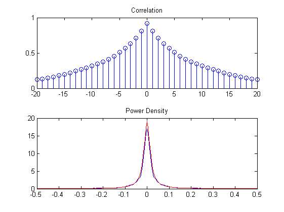
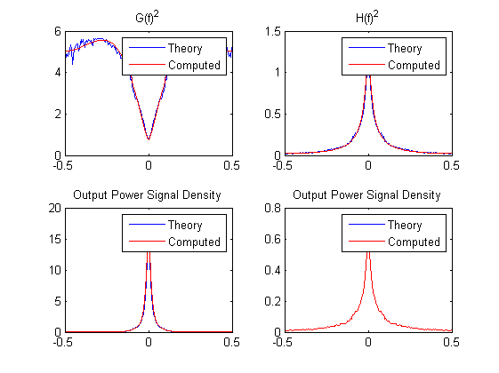
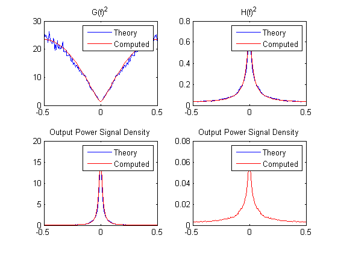
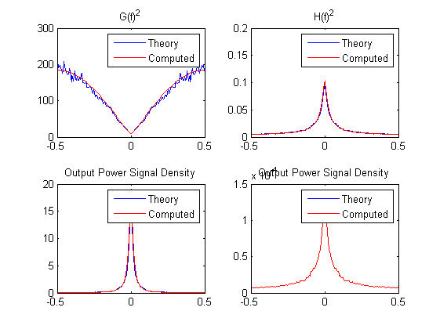
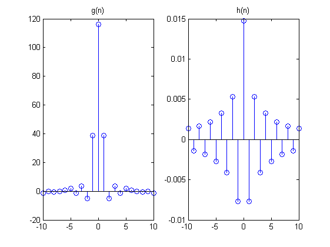

Contents
o1
close all;
N = 100; p = .9;
average = 100;
corrx = 0;
x = zeros(1,N);
l = 0:1/(2*(N-1)):1;
for j = 1:average
x = sqrt(1-p^2)*randn(1,N);
x = filter( 1,[1 -p],x);
corrx = corrx + xcorr(x);
end
corrx = corrx/average/N;
powerx = fft(corrx);
figure; set(gcf,'name','oppg1','numbertitle','off');
powerx = abs(powerx);
powerx = [powerx(N+1:2*N-1) powerx(1:N) ];
powerxT = @(f) (1-p^2)./((1-p*exp(-1j*2*pi*f)).*(1-p*exp(1j*2*pi*f)));
sqPowerxT = @(f) sqrt(powerxT(f));
freq = -0.5:1/(2*(N-1)):0.5;
subplot(2,1,1); stem(-20:20, corrx(N-20:N+20)),title('Correlation');
subplot(2,1,2); plot(freq,powerx),title('Power Density'); hold on;
subplot(2,1,2); plot(freq,powerxT(freq),'r');
sigmaU = 1; P = 1;
for bitRate = [.75 2 5]
sigmaQ = (2*pi*exp(1)*sigmaU*2^(-2*bitRate))/12;
lagrange = (sigmaQ/(P + sigmaQ)*trapz(l,sqrt(powerx)))^2;
lagrangeT = (sigmaQ/(P + sigmaQ)*integral(sqPowerxT,-0.5,0.5))^2;
G = sqrt( sigmaQ./(lagrange.*powerx))-sigmaQ./powerx;
H = sqrt( (lagrange.*powerx) /sigmaQ) - lagrange;
GT = sqrt( sigmaQ./(lagrangeT.*powerxT(freq)))- (sigmaQ./powerxT(freq));
HT = sqrt( (lagrangeT.*powerxT(freq)) /sigmaQ)- lagrangeT;
Sx_signal = powerx.*G.*H;
Sx_signalT = powerxT(freq).*G.*H;
Sx_noise = sigmaQ.*H;
Sx_noiseT = sigmaQ.*H;
figure();
set(gcf,'name',sprintf('Bitrate: %g',bitRate),'numbertitle','off')
subplot(2,2,1); plot(freq, abs(G)),title('G(f)^2'); hold on;
subplot(2,2,1); plot(freq, abs(GT),'r'), legend('Theory','Computed');
subplot(2,2,2); plot(freq, abs(H)),title('H(f)^2'); hold on;
subplot(2,2,2); plot(freq, abs(HT),'r'), legend('Theory','Computed');
subplot(2,2,3); plot(freq, abs(Sx_signal)),title('Output Power Signal Density'); hold on;
subplot(2,2,3); plot(freq, abs(Sx_signalT),'r'), legend('Theory','Computed');
subplot(2,2,4); plot(freq, abs(Sx_noise)),title('Output Power Signal Density'); hold on;
subplot(2,2,4); plot(freq, abs(Sx_noiseT),'r'), legend('Theory','Computed');
fprintf('Bitrate: %g , SNR: %g \n', bitRate, 10*log10(Sx_signal/Sx_noise));
end
Bitrate: 0.75 , SNR: 12.4724
Bitrate: 2 , SNR: 22.2554
Bitrate: 5 , SNR: 48.9704
   
2b
close all;
h = FrSamp(H)';
g = FrSamp(G)';
figure()
subplot(1,2,1), stem(-10:10, g(N-10:N+10)), title('g(n)');
subplot(1,2,2), stem(-10:10, h(N-10:N+10)), title('h(n)');
